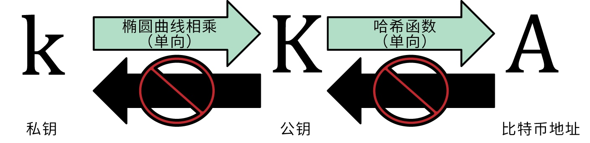
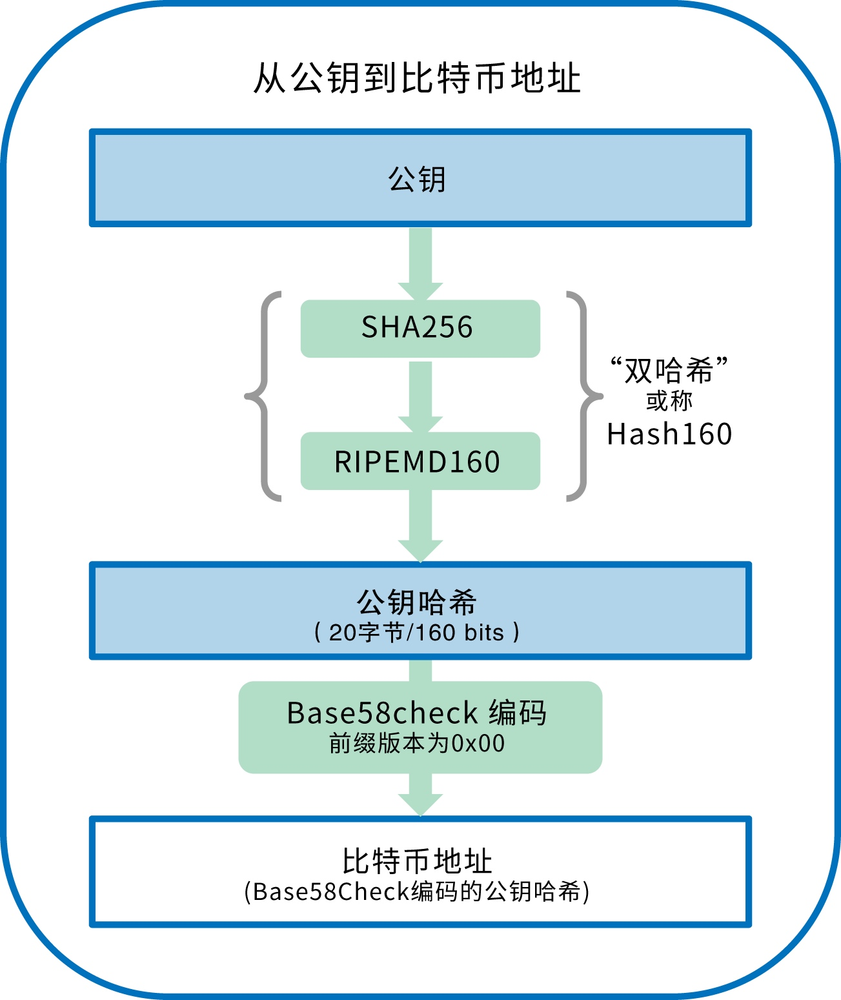
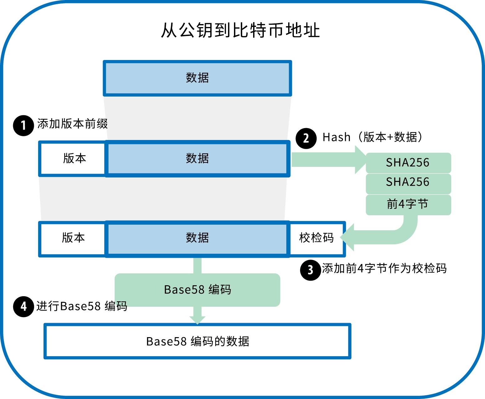
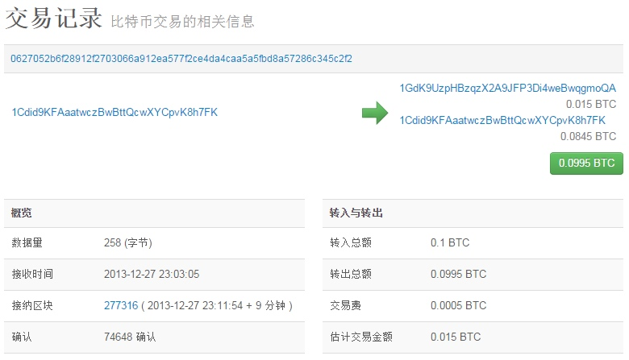
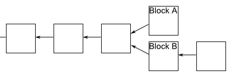
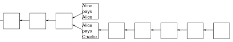

比特币原理、区块、区块链
比特币原理、区块、区块链
转自比特币块链和挖矿原理
转自比特币加密技术之椭圆曲线密码学
转自精通比特币
转自Block hashing algorithm
转自区块链入门教程
介绍
2008年，一位化名为中本聪的人，在一篇名为《比特币：一个点对点的电子现金系统》的论文中首先提出了比特币。中本聪结合以前的多个数字货币发明，如B-money和HashCash，创建了一个完全去中心化的电子现金系统，不依赖于通货保障或是结算交易验证保障的中央权威。
关键的创新是利用分布式计算系统（称为“工作量证明”算法）每隔10分钟进行一次的全网“选拔”，能够使去中心化的网络同步交易记录。这个能优雅的解决双重支付问题，即一个单一的货币单位可以使用两次。此前，双重支付问题是数字货币的一个弱点，并通过一个中央结算机构清除所有交易来处理。
根据中本聪发表的一篇涉及比特币网络运行的论文，比特币网络自从被许多其他的程序员修订之后，于2009年启动。
私钥-密码 公钥-地址-账号


私钥 - 密码
通过
随机数得到私钥是一个256bits的数
随机数随机数范围 0~2256 相当于宇宙中所有原子的数量，不会重复到目前为止，人类可观测的宇宙中的原子数约为10的80次方
这个私钥(密码)需要保管好，这是你拥有比特币的唯一证明
其中，私钥在比特币钱包中显示时候会以
Base58校验和编码格式显示,这种私钥格式被称为钱包导入格式（WIF，Wallet Import Format）公钥
私钥通过算法SECP256K1(椭圆曲线算法)算出公钥
计算过程不可逆地址 - 账号
根据协议公钥的长度是512位。这个长度不太方便传播，因此协议又规定，要为公钥生成一个160位的指纹。所谓指纹，就是一个比较短的、易于传播的哈希值。160位是二进制，写成十六进制，大约是26到35个字符，比如 1BvBMSEYstWetqTFn5Au4m4GFg7xJaNVN2。这个字符串就叫做钱包的地址，它是唯一的，
由公钥生成比特币地址时使用的算法是Secure Hash Algorithm (SHA)和the RACE Integrity Primitives Evaluation Message Digest (RIPEMD)，特别是SHA256和RIPEMD160。
公钥 K 为输入，计算其SHA256哈希值，并以此结果计算RIPEMD160 哈希值，得到一个长度为160比特（20字节）的数字：
\(A = RIPEMD160(SHA256(K))\)
公式中，K是公钥，A是生成的比特币地址。
Base64编码
Base64使用了26个小写字母、26个大写字母、10个数字以及两个符号（例如“+”和“/”），用于在电子邮件这样的基于文本的媒介中传输二进制数据。Base64通常用于编码邮件中的附件。
Base58编码
Base58是一种基于文本的二进制编码格式，用在比特币和其它的加密货币中。这种编码格式不仅实现了数据压缩，保持了易读性，还具有错误诊断功能。Base58是Base64编码格式的子集，同样使用大小写字母和10个数字，但舍弃了一些容易错读和在特定字体中容易混淆的字符。具体地，Base58不含Base64中的0（数字0）、O（大写字母o）、l（小写字母L）、I（大写字母i），以及“+”和“/”两个字符。
简而言之，Base58就是由不包括（0，O，l，I）的大小写字母和数字组成。
Base58Check编码
Base58Check是一种常用在比特币中的Base58编码格式，增加了错误校验码来检查数据在转录中出现的错误。校验码长4个字节，添加到需要编码的数据之后。校验码是从需要编码的数据的哈希值中得到的，所以可以用来检测并避免转录和输入中产生的错误。使用Base58check编码格式时，编码软件会计算原始数据的校验码并和结果数据中自带的校验码进行对比。二者不匹配则表明有错误产生，那么这个Base58Check格式的数据就是无效的。例如，一个错误比特币地址就不会被钱包认为是有效的地址，否则这种错误会造成资金的丢失。
为了使用Base58Check编码格式对数据（数字）进行编码，首先我们要对数据添加一个称作“版本字节”的前缀，这个前缀用来明确需要编码的数据的类型。例如，比特币地址的前缀是0（十六进制是0x00），而对私钥编码时前缀是128（十六进制是0x80）。 表4-1会列出一些常见版本的前缀。

交易
下图展示三笔交易(第二图是第二笔交易的网上查询结果)


可以使用api查询某个地址(账号 1Cdid9KFAaatwczBwBttQcwXYCpvK8h7FK)所有未消费的输出
$ curl https://blockchain.info/unspent?active=1Cdid9KFAaatwczBwBttQcwXYCpvK8h7FK
这三笔交易每一笔的交易大小为258字节，包含了金额未来所属需要的全部信息。现在，这个交易必须要被传送到比特币网络中以成为分布式账簿（区块链）的一部分。
区块(Block)
比特币网络中，数据以文件的形式被永久记录，我们称之为
区块。
一个区块是一些或所有最新比特币交易的记录集，且未被其他先前的区块记录。区块可以想像为一个城市记录者的记录本上的单独一页纸(对房地产产权的变更记录)或者是股票交易所的总帐本。在绝大多数情况下，新区块被加入到记录最后(在比特币中的名称为：块链)，一旦写上，就再也不能改变或删除。每个区块记录了它被创建之前发生的所有事件。
根据比特币协议，一个区块的大小最大是 1MB，而一笔交易大概是500字节左右，因此一个区块最多可以包含2000多笔交易。矿工负责把这2000多笔交易打包在一起，组成一个区块，然后计算这个区块的 Hash。
区块包含 区块头(block header) 和 区块主体(block body)
block body contains all transactions
A block header contains these fields:
| Field | Purpose | Updated when... | Size (Bytes) |
|---|---|---|---|
| Version | Block version number | You upgrade the software and it specifies a new version | 4 |
| hashPrevBlock | 256-bit hash of the previous block header | A new block comes in | 32 |
| hashMerkleRoot | 256-bit hash based on all of the transactions in the block | A transaction is accepted | 32 |
| Time | Current timestamp as seconds since 1970-01-01T00:00 UTC | Every few seconds | 4 |
| Bits | Current target in compact format | The difficulty is adjusted | 4 |
| Nonce | 32-bit number (starts at 0) | A hash is tried (increments) | 4 |
交易到区块的过程 - 挖矿 10分钟
新交易不断地从用户钱包和应用流入比特币网络。当比特币网络上的节点看到这些交易时，会先将它们放到各自节点维护的一个临时的未经验证的交易池中。当矿工构建一个新区块时，会将这些交易从这个交易池中拿出来放到这个新区块中，
为了将产出速率恒定在十分钟，中本聪还设计了难度系数的动态调节机制。他规定，难度系数每两周（2016个区块）调整一次。如果这两周里面，区块的平均生成速度是9分钟，就意味着比法定速度快了10%，因此难度系数就要调高10%；
挖矿规则
整个比特币网络会更改挖矿难度，以维持 每10分钟 添加一个新区块 到区块链
计算 Hash 的过程叫做挖矿，这需要大量的计算。矿工之间也在竞争，谁先算出 Hash，谁就能第一个添加新区块进入区块链，从而享受这个区块的全部收益，而其他矿工将一无所获。
一笔交易一旦写入了区块链，就无法反悔了。这里需要建立一个观念：比特币不存放在钱包或其他别的地方，而是只存在于区块链上面。区块链记载了你参与的每一笔交易，你得到过多少比特币，你又支付了多少比特币，因此可以算出来你拥有多少资产。
挖矿 规则（计算 Hash）
- 对区块链最后一块区块头的 SHA-256 函数值+这个新区块的区块头信息+这个新区块的区块主体（所有交易记录）组成一个字符串
- 找一个随机数 1中字符串 + 随机数 组成新字符串；SHA-256（新字符串）=256位的二进制数，如果这个256位的二进制数前72位都是0（注这个挖矿难度是在 区块头中设置 比特币网络会动态调整），说明挖矿成功（这个找到随机数的过程非常困难） 找到随机数，则新区块构造完成，添加到区块链，就可以获得收益 收益：
- 比特股网络奖励（12.5比特币2017）
- 交易费收入，区块中所有交易的交易费（2比特币（2017） 矿工总收入：1区块=14.5比特币=$25w=￥170w
挖矿时代变化和挖矿速度变化
CPU挖矿的时代早已过去，GPU挖矿也早已不是主流，现在的比特币挖矿是ASIC挖矿和大规模集群挖矿的时代。
回顾挖矿历史，比特币挖矿总共经历了以下五个时代：
CPU挖矿→GPU挖矿→FPGA挖矿→ASIC挖矿→大规模集群挖矿
挖矿芯片更新换代的同时，带来的挖矿速度的变化是：
CPU（20MHash/s）→GPU（400MHash/s）→FPGA（25GHash/s）→ASIC（3.5THash/s）→大规模集群挖矿（3.5THash/s*X）
挖矿速度，专业的说法叫算力，就是计算机每秒产生hash碰撞的能力。也就是说，我们手里的矿机每秒能做多少次hash碰撞，就是算力。算力就是挖比特币的能力，算力越高，挖得比特币越多，回报越高。
区块链的安全性保证
比特币区块链是全球复式记账总账簿
区块链作为无人管理的分布式数据库
区块链上的区块内容不会被篡改
假设 ... A->B->C A B C 区块链中的最后三个区块 黑客如果想要篡改 B 块中 区块主体的 交易记录（如修改转账的目标地址）, 那么意味着 B 块中的 区块主体改变了， 那么 B块中区块头 本区块交易主体的hash（hash based on all of the transactions in the block）也会相应改变， 那么 B块头 的hash值也会改变， 与C块中存储的上一块的hash值对不上，便不会被承认， 这样被改的区块变回脱离区块链，（倘若黑客掌握全网51%的计算能力，便可继续修改 C块 及后续产生的最新块，针对最新块，它包含的上一块C块的块头hash是被修改过的， 掌握51%的计算能力，便可在所有人之前将新块（篡改后的）加入到区块链中，是之生效） 假设 黑客修改的是区块C，与上面讨论的最新快是一样的。区块链分叉问题
如果两个人同时向区块链写入数据，也就是说，同时有两个区块加入，因为它们都连着前一个区块，就形成了分叉。这时应该采纳哪一个区块呢？

现在的规则是，新节点总是采用最长的那条区块链。如果区块链有分叉，将看哪个分支在分叉点后面，先达到6个新区块（称为"六次确认"）。按照10分钟一个区块计算，一小时就可以确认。
由于新区块的生成速度由计算能力决定，所以这条规则就是说，拥有大多数计算能力的那条分支，就是正宗的比特链。
。双重支付问题
举例来说，"张三向李四转移了1个比特币"这句话，可能被其他人复制，也可能被张三自己复制，提交到区块链。
如果这句话被两次写入区块链，就意味着张三可以把同一笔钱花掉两次。但是，第二次写入的时候，查询区块链可以发现张三已经把这笔钱花掉了，从而认定这是不合法的交易，不能写入区块链。因此，复制交易是不可能的。
比较麻烦的是另一种情况，就是张三把同一笔钱付给两个人。他先向区块链提交一个交易"张三向李四转移了1个比特币"，然后又提交了另一个交易"张三向王五转移了1个比特币"。这两个交易都可能被认为是真实的交易，从而进入区块链。因此，必须有办法防止出现这种情况。
情况一：同一个矿工收到了这两个交易。那么他会察觉到，它们不可能同时成立，因此选择其中的一笔写入区块链。
情况二：矿工 A 收到了第一笔交易，矿工 B 收到了第二笔交易，他们各自都会认定这是合法的交易，分别把这两笔交易写入了两个区块，这时区块链就出现了分叉。
这个时候便用 2中的
六次确认
术语
地址
比特币地址（例如：1DSrfJdB2AnWaFNgSbv3MZC2m74996JafV）由一串字符和数字组成，以阿拉伯数字“1”开头。就像别人向你的email地址发送电子邮件一样，他可以通过你的比特币地址向你发送比特币。
BIP
比特币改进提议 （Bitcoin Improvement Proposals 的缩写），指比特币社区成员所提交的一系列改进比特币的提议。例如，BIP0021是一项改进比特币统一资源标识符（URI）计划的提议。
比特币
“比特币”既可以指这种虚拟货币单位，也指比特币网络或者网络节点使用的比特币软件。
区块
一个区块就是若干交易数据的集合，它会被标记上时间戳和之前一个区块的独特标记。区块头经过哈希运算后会生成一份工作量证明，从而验证区块中的交易。有效的区块经过全网络的共识后会被追加到主区块链中。
区块链
区块链是一串通过验证的区块，当中的每一个区块都与上一个相连，一直连到创世区块。
确认
当一项交易被区块收录时，我们可以说它有一次确认。矿工们在此区块之后每再产生一个区块，此项交易的确认数就再加一。当确认数达到六及以上时，通常认为这笔交易比较安全并难以逆转。
难度
整个网络会通过调整“难度”这个变量来控制生成工作量证明所需要的计算力。
比特币系统包含调节挖矿难度的协议。挖矿——在比特币网络中成功写入一个区块交易——的难度是动态调整的，保证不管有多少矿工（多少CPU）挖矿，平均每10分钟只有一个矿工成功。
比特币协议还规定，每四年新币的开采量减半，同时限制比特币的最终开采总量为2,100万枚。这样，流通中的比特币数量非常接近一条曲线，并将在2140年比特币将达到2,100万枚。难度目标
使整个网络的计算力大致每10分钟产生一个区块所需要的难度数值即为难度目标。
难度调整
整个网络每产生2,106个区块后会根据之前2,106个区块的算力进行难度调整。
矿工费
交易的发起者通常会向网络缴纳一笔矿工费，用以处理这笔交易。大多数的交易需要0.5毫比特币的矿工费。
哈希
二进制数据的一种数字指纹。
创世区块
创世区块指区块链上的第一个区块，用来初始化相应的加密货币。
矿工
矿工指通过不断重复哈希运算来产生工作量证明的各网络节点。
网络
比特币网络是一个由若干节点组成的用以广播交易信息和数据区块的P2P网络。
工作量证明
工作量证明指通过有效计算得到的一小块数据。具体到比特币，矿工必须要在满足全网目标难度的情况下求解SHA256算法。
奖励
每一个新区块中都有一定量新创造的比特币用来奖励算出工作量证明的矿工。
私钥
用来解锁对应（钱包）地址的一串字符，例如5J76sF8L5jTtzE96r66Sf8cka9y44wdpJjMwCxR3tzLh3ibVPxh。
交易
简单地说，交易指把比特币从一个地址转到另一个地址。更准确地说，一笔“交易”指一个经过签名运算的，表达价值转移的数据结构。每一笔“交易”都经过比特币网络传输，由矿工节点收集并封包至区块中，永久保存在区块链某处。
钱包
钱包指保存比特币地址和私钥的软件，可以用它来接受、发送、储存你的比特币。